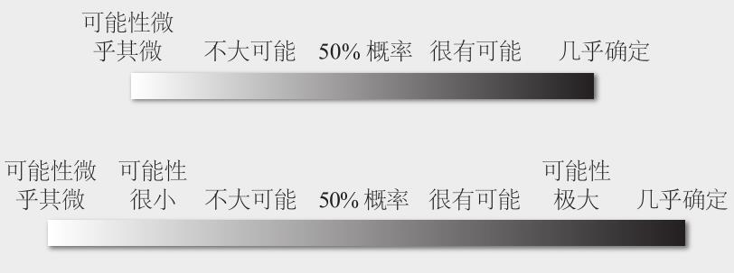

罗伯特•鲁宾不必“拍打桌子”就能让超级预测家明白，80%的发生概率暗示了不发生的概率为20%。由于自身超强的数学素养产生的一定影响，超级预测家，与科学家和数学家一样，往往是具有概率思维的人。
对不可简化的不确定性的认知是概率思维的核心，而评估不确定性是一项棘手的工作。为了完成这项工作，我们要利用哲学家所提出的“可认知的”不确定性和“偶然遇到的”不确定性的区分方法。所谓可认知的不确定性，指的是现在还不知道但至少理论上可知的不确定性。如果你想预测一台神秘机器的工作情况，从理论上说，熟练的工程师可以打开这台机器，判断它的运行情况。而偶然遇到的不确定性，指的是不仅现在不知道，而且是不可知的。无论你有多么想知道费城一年后是否会下雨，无论你请教了多少气象学家，你就是无法猜出季节性气候变化。你面对的是像云一样十分缥缈的问题，它的不确定性即使从理论上也是不可能消除的。由于偶然遇到的不确定性的存在，不论我们如何小心计划，生活总是会有意外。超级预测家比大多数人更理解这个深刻真理。如果感觉某个问题具有不可简化的不确定性，例如关于货币市场的问题，他们懂得谨慎处理，会将初始预测限定在35%~65%之间的“也许”区域，然后尝试扩大范围。他们知道，结论越模糊，就越难击败掷飞镖的黑猩猩。19
另一个有用的判据是“五五开”这种说法。对谨慎的具有概率思维的人来说，50%只是一长串概率设定中的一个，他们对50%、49%或51%都一视同仁。但是，按照三种设定进行预测的人在被要求用概率做预测时，使用50%这个数的可能性要大得多，因为他们用它来代替“也许”。因此，可以认为经常使用50%的人准确率更低。情报高级研究计划局的比赛数据正好也表明了这一点。20
我曾经问过来自蒙特利尔的超级预测家布莱恩•拉巴特（Brian Labatte），他的阅读偏好是什么。他回答，小说和非小说都行。二者各占多大比例？我继续问。“我想说，70%吧，”长时间停顿后，他接着说，“不，非小说占65%，小说占35%。”21 就闲聊而言，这是非常精确的用语。即使在情报高级研究计划局的比赛中，普通预测者进行正式预测时，通常也做不到那样精确。他们一般喜欢用10的倍数，也就是说，他们会说某件事可能性为30%或者40%，但不会说35%，更不用提37%了。超级预测家的细分程度高得多。他们的1/3预测使用个位数百分比作为概率，举例来说，他们谨慎思考后判断某事发生概率为3%，而不是4%。还记得那位被上司罗伯特•鲁宾教导要按照合理细分的概率来思考问题的财政部助理吗，超级预测家就像他一样，力求精确，以至于有时他们会讨论在我们看来微不足道的差别。例如，正确的概率是5%还是1%？或者，这个不到1%的数是否足够接近零，可以四舍五入为零？这些讨论不是那种关于针尖上可以容下多少位天使跳舞的无意义争论，因为这种程度的精确性有时确实重要。它意味着，在前一种情形中，威胁或机会的概率极其微小，但仍然是有可能的，而后一种情形中，威胁或机会是绝对不可能存在的。如果概率极其微小的事件真的发生了，所造成的后果有足够的影响力，那么这种差别就并非无关紧要。我们可以想到这样的例子：埃博拉暴发，或者是资助下一个谷歌。
现在，我鼓励读者保持怀疑精神，而怀疑主义者也许会对我的观点持有疑义。想要给他人留下深刻印象，很容易，只要轻抚下巴，然后宣称，“苹果公司的股票价格有73%的可能在本年度增长24%”，就能达到目的。抛出几个大多数人都不理解的技术名词，什么“随机”啦，“衰退”啦，利用人们对数学和科学合乎情理的推崇，引诱他们频频点头。这种细分像冗长晦涩的讲话一样毫无意义。不幸的是，它很普遍。那么，我们怎么知道我们看到的超级预测家的细分是有意义的？假设布莱恩•拉巴特最初设定预测概率为70%，后又调整为65%，我们怎样才能确定这番变动有可能导致预测更加准确呢？答案见于比赛数据中。芭芭拉•梅勒斯证明，细分意味着准确率提高：普通预测者喜欢10的倍数，例如20%、30%或40%，一些细分预测者使用5的倍数作为概率值，如20%、25%或30%，二者相比，后者准确率更高；而在这二者之上的是进一步细分的预测者，他们以1作为变动单位，例如20%、21%或22%。芭芭拉又做了深入测试。她对选手们的预测进行四舍五入处理，减弱它们的细分程度。于是，很可能是此次比赛中细分程度最高的预测—只有几个百分点—变为5%，接着，最接近10%的预测被改为10%。经过这样的处理，所有预测的细分水平都降了一个等级。然后她重新计算布莱尔得分，发现即使是0.05%这样级别的最细微的四舍五入也会令超级预测家失去准确性，而普通预测者的预测经过4倍四舍五入处理（0.2%级别），准确性基本不会变化。22
布莱恩•拉巴特的细分可不等同于无聊冗长的谈话。它体现了精确性，这是他成为超级预测家的一个重要原因。
大多数人绝不会尝试做到布莱恩那样精确，他们故步自封，执着于两种或三种意识设定。这是严重的错误。传奇投资家查理•芒格说过一段睿智的话：“如果你没有掌握这种基本的略微怪异的基础概率学知识，那么，在漫长的人生旅途中，你会像一个参加踢屁股比赛的跛子。”23
一些经验丰富的人和先进的组织也不会敦促自己向布莱恩的水准看齐。就举一个例子。美国国家情报委员会的《国家情报评估》对外发布超级敏感的决策，例如是否出兵伊拉克，是否与伊朗谈判。它要求分析师按照5个或7个等级做预测。

这是在两种或三种设定基础上的重大改进，但是仍然达不到最具求真精神的预测家在许多问题上所能达到的高度。我认识一些为国家情报委员会效力的人。我怀疑他们低估了自己。如果国家情报委员会以及其他拥有一流人才的机构重视和鼓励细分工作，他们也能取得类似的成果。他们应该这么做。24
记住，你的回报是对未来有一个更清晰的认知，在人生的踢屁股比赛中，这是无价之宝。